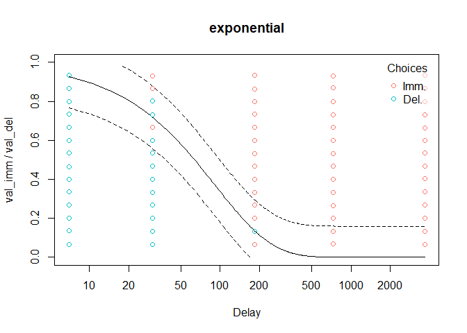

tempodisco is an R package for behavioural researchers working with delay discounting data (also known as temporal discounting intertemporal choice data). It is intended to simplify common tasks such as scoring responses (e.g. computing indifference points from an adjusting amounts procedure, computing the “area under the curve”, or computing values as in the Monetary Choice Questionnaire; Kirby et al., 1999), identifying poor-quality data (e.g. non-systematic responding and failed attention checks), modelling choice data using multiple discount functions (e.g. hyperbolic, exponential, etc.—see below), and modelling reaction times using drift diffusion models.
Installation
You can install tempodisco from GitHub with:
# install.packages("devtools")
devtools::install_github("kinleyid/tempodisco")Example usage
Modeling indifference point data
To compute indifference points from an adjusting amount procedure, we can use the adj_amt_indiffs function:
data("adj_amt_sim") # Load simulated data from an adjusting amounts procedure
indiff_data <- adj_amt_indiffs(adj_amt_sim)
head(indiff_data)
#> del indiff
#> 1 7 0.984375
#> 2 30 0.859375
#> 3 90 0.046875
#> 4 180 0.453125
#> 5 360 0.015625This returns a data frame containing the delays and corresponding indifference points. The function td_ipm can then be used to identify the best-fitting discount function (according to the Bayesian information criterion) from any subset of the following options:
| Name | Functional form |
|---|---|
| Exponential (Samuelson, 1937) | |
| Scaled exponential (beta-delta; Laibson, 1997) | |
| Nonlinear-time exponential (Ebert & Prelec, 2007) | |
| Dual-systems exponential (Ven den Bos & McClure, 2013) | |
| Inverse q-exponential (Green & Myerson, 2004) | |
| Hyperbolic (Mazur, 1987) | |
| Nonlinear-time hyperbolic (Rachlin, 2006) |
For example:
mod <- td_ipm(data = indiff_data, discount_function = c('exponential', 'hyperbolic', 'nonlinear-time-hyperbolic'))
print(mod)
#>
#> Temporal discounting indifference point model
#>
#> Discount function: hyperbolic, with coefficients:
#>
#> k
#> 0.01767284
#>
#> ED50: 56.5840102782019
#> AUC: 0.313783753467372From here, we can extract useful information about the model and visualize it
plot(mod)Modeling binary choice data
A traditional method of modeling binary choice data is to compute a value of using the scoring method introduced for the Kirby Monetary Choice Questionnaire:
data("td_bc_single_ptpt")
mod <- kirby_score(td_bc_single_ptpt)
print(coef(mod))
#> k
#> 0.02176563Another option is to use the logistic regression method of Wileyto et al., where we can solve for the value of the hyperbolic discount function in terms of the regression coefficients:
mod <- wileyto_score(td_bc_single_ptpt)
#> Warning: glm.fit: fitted probabilities numerically 0 or 1 occurred
print(mod)
#>
#> Temporal discounting binary choice linear model
#>
#> Discount function: hyperbolic from model hyperbolic.1, with coefficients:
#>
#> k
#> 0.04372626
#>
#> Call: glm(formula = fml, family = binomial(link = "logit"), data = data)
#>
#> Coefficients:
#> .B1 .B2
#> 0.49900 0.02182
#>
#> Degrees of Freedom: 70 Total (i.e. Null); 68 Residual
#> Null Deviance: 97.04
#> Residual Deviance: 37.47 AIC: 41.47We can extend this approach to a number of other discount functions using the method argument to td_bclm:
| Name | Discount function | Linear predictor | Parameters |
|---|---|---|---|
hyperbolic.1 |
Hyperbolic (Mazur, 1987): |
||
hyperbolic.2 |
(Mazur, 1987): |
||
exponential.1 |
Exponential (Samuelson, 1937): |
||
exponential.2 |
Exponential (Samuelson, 1937): |
||
scaled-exponential |
Scaled exponential (beta-delta; Laibson, 1997): |
, | |
nonlinear-time-hyperbolic |
Nonlinear-time hyperbolic (Rachlin, 2006): |
, | |
nonlinear-time-exponential |
Nonlinear-time exponential (Ebert & Prelec, 2007): |
, |
Where is the logit function, or the quantile function of a standard logistic distribution, and is the quantile function of a standard Gumbel distribution (Kinley et al., 2024)
By setting method = "all" (the default), td_bclm tests all of the above models and returns the best-fitting one, according to the Bayesian information criterion:
mod <- td_bclm(td_bc_single_ptpt, model = 'all')
#> Warning: glm.fit: fitted probabilities numerically 0 or 1 occurred
#> Warning: glm.fit: fitted probabilities numerically 0 or 1 occurred
#> Warning: glm.fit: fitted probabilities numerically 0 or 1 occurred
print(mod)
#>
#> Temporal discounting binary choice linear model
#>
#> Discount function: exponential from model exponential.2, with coefficients:
#>
#> k
#> 0.01003216
#>
#> Call: glm(formula = fml, family = binomial(link = "logit"), data = data)
#>
#> Coefficients:
#> .B1 .B2
#> 3.597 -16.553
#>
#> Degrees of Freedom: 70 Total (i.e. Null); 68 Residual
#> Null Deviance: 97.04
#> Residual Deviance: 15.7 AIC: 19.7We can explore an even wider range of discount functions using nonlinear modeling with td_bcnm. When discount_function = "all" (the default), all of the following models are tested and the best-fitting one (according to the Bayesian information criterion) is returned:
| Name | Functional form |
|---|---|
| Exponential (Samuelson, 1937) | |
| Scaled exponential (beta-delta; Laibson, 1997) | |
| Nonlinear-time exponential (Ebert & Prelec, 2007) | |
| Dual-systems exponential (Ven den Bos & McClure, 2013) | |
| Inverse q-exponential (Green & Myerson, 2004) | |
| Hyperbolic (Mazur, 1987) | |
| Nonlinear-time hyperbolic (Rachlin, 2006) |
mod <- td_bcnm(td_bc_single_ptpt, discount_function = 'all')
plot(mod, log = 'x', verbose = F, p_lines = c(0.05, 0.95))
Drift diffusion models
To model reaction times using a drift diffusion model, we can use td_ddm (here, for speed, we are starting the optimization near optimal values for this dataset):
ddm <- td_ddm(td_bc_single_ptpt, discount_function = 'exponential',
v_par_starts = 0.01,
beta_par_starts = 0.5,
alpha_par_starts = 3.5,
tau_par_starts = 0.9)
print(ddm)
#>
#> Temporal discounting drift diffusion model
#>
#> Discount function: exponential
#> Coefficients:
#>
#> k v beta alpha tau
#> 0.009664986 0.008541880 0.591146000 3.501014882 0.903601241
#>
#> "none" transform applied to drift rates.
#>
#> ED50: 71.7173522454106
#> AUC: 0.0283275204463082
#> BIC: 260.86822208669Following Peters & D’Esposito (2020), we can apply a sigmoidal transform to the drift rate to improve model fit using the argument drift_transform = "sigmoid":
ddm_sig <- td_ddm(td_bc_single_ptpt, discount_function = 'exponential',
drift_transform = 'sigmoid',
v_par_starts = 0.01,
beta_par_starts = 0.5,
alpha_par_starts = 3.5,
tau_par_starts = 0.9)
coef(ddm_sig)
#> k v beta alpha tau
#> 0.01059955 0.03568827 0.58234627 3.85938224 0.83088464
#> max_abs_drift
#> 1.14207920This introduces a new variable max_abs_drift ( in the equation above) controlling the absolute value of the maximum drift rate.
We can use the model to predict reaction times and compare them to the actual data:
pred_rts <- predict(ddm_sig, type = 'rt')
cor.test(pred_rts, td_bc_single_ptpt$rt)
#>
#> Pearson's product-moment correlation
#>
#> data: pred_rts and td_bc_single_ptpt$rt
#> t = 3.2509, df = 68, p-value = 0.001791
#> alternative hypothesis: true correlation is not equal to 0
#> 95 percent confidence interval:
#> 0.1442124 0.5539902
#> sample estimates:
#> cor
#> 0.3667584We can also plot reaction times against the model’s predictions:
plot(ddm_sig, type = 'rt', confint = 0.8)
The “model-free” discount function
In addition to the discount functions listed above, we can fit a “model-free” discount function to the data, meaning we fit each indifference point independently. This enables us to, first, test whether a participant exhibits non-systematic discounting according to the Johnson & Bickel criteria:
- C1 (monotonicity): No indifference point can exceed the previous by more than 0.2 (i.e., 20% of the larger delayed reward)
- C2 (minimal discounting): The last indifference point must be lower than first by at least 0.1 (i.e., 10% of the larger delayed reward)
mod <- td_bcnm(td_bc_single_ptpt, discount_function = 'model-free')
print(nonsys(mod)) # Model violates neither criterion; no non-systematic discounting detected
#> C1 C2
#> FALSE FALSEWe can also measure the model-free area under the curve (AUC), a useful model-agnostic measure of discounting.
Reporting issues and requesting features
If you encounter problems with the software or would like to it to have additional functionality, please open a new issue on the GitHub repository. Try to include as much detail as possible, especially how to reproduce any errors/incorrect results. GitHub has instructions on opening an issue here.
Contributing
If you would like to contribute to tempodisco, you’re more than welcome! Please follow the instructions here on how to contribute to a project on GitHub. Feel free to contact me if you’d like help with any contributions.